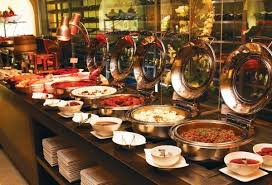
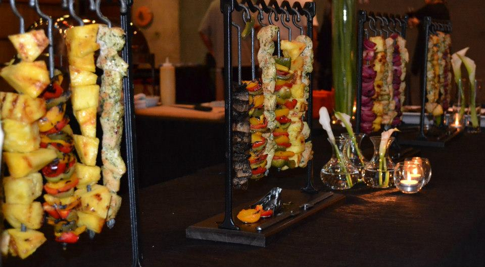
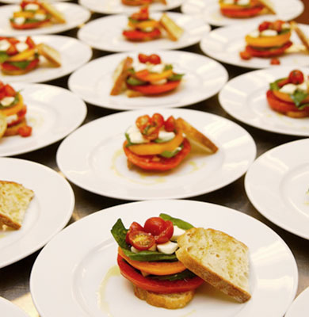
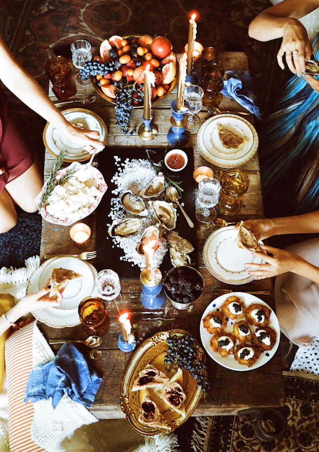
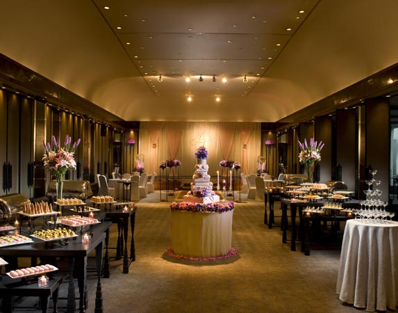

Pick the right Style for your party topicPros and Cons |
|
|  | Buffet StylePro:Fewer servers are needed; easier and more cost effective to provide guests with a variety of choices; promotes mingling and interacting among guests. Con: it takes a while for all guests to receive their food; might have to rent linens, chaffing dishes, Guests have to serve themselves and carry their own plates, people tend to eat more. |
Food-Station StylePro: Creative food stations and presentations are crowd pleasers; guests will also appreciate the wide variety of dishes and the interactive element; guests won't likely have to wait in line; This meal style also promotes a lot of interaction among guests. Con: Your reception site will need ample room to accommodate the extra space food stations require. You will also need more chefs if you have interactive stations (i.e. pasta, carving stations, etc.), adding to your catering bill. |
 |
|  | Plated DinnerPro:Everyone at the table gets their food at the same time; meal is pre-selected, so your food costs will be lower than a buffet or family-style meal. Con: Requires more servers. Also, the food options are limited. |
Family-Share StylePro: Guests can help themselves to as much food as they'd like. The mealtime will be very efficient since guests can begin eating immediately after serving themselves. Con: Requires ample space on your dinner tables for the various platters and dishes; Need to increase budget for rental additional platters and serving pieces; Increased food costs. |
 |
|  | Cocktail-Style ReceptionPro: If your venue is small, cocktail receptions allow you to have more people; easier to chat among guests; food costs could potentially be more affordable. Con: guests may not have attended a cocktail; may be some confusion if they are expecting a full meal; guests will likely drink more than at a dinner reception. |
Please Choose Your favorite Dinning Style While you fill the Party Qoute Form |
|